Os feedbacks da primeira versão do Walk-Bot não foram muito positivos. Os usuários gostaram da premissa do jogo, porém acharam que havia pouca interação: a única escolha que poderia ser feita era a casa inicial do Walk-Bot. Pensando nisso, a empresa LastLife desenvolveu uma segunda versão do jogo.
Nesta nova versão, o Walk-Bot deve andar por um tabuleiro tal que, em cada casa, há um conjunto de instruções possíveis. Desse modo, cabe ao jogador escolher qual deve ser a instrução executada caso haja mais do que uma. A ideia básica do jogo continua a mesma: o Walk-Bot deve atravessar o tabuleiro, isto é, começar em uma das casas localizadas na coluna mais à esquerda do tabuleiro e terminar em uma das casas localizadas na coluna mais à direita do tabuleiro, na qual deve existir uma instrução, dentre as possíveis, para ele ir à direita. A casa inicial continua sendo escolhida pelo jogador.
O desafio do jogo permanece praticamente o mesmo: o jogador deve realizar as escolhas (tanto da casa inicial quanto nas demais casas) que levem o Walk-Bot a atravessar o tabuleiro com o menor número de passos. Isso porque, a cada passo, o robô perde uma unidade de energia, que é parcialmente carregada a cada mudança de fase (ou tabuleiro). Desse modo, se o caminho de travessia for muito longo, a energia do Walk-Bot acaba e ele morre. Além disso, conforme as fases vão avançando, maiores são os tabuleiros e, portanto, mais energia é necessária para atravessá-los.
Para entender melhor como a nova versão do jogo funciona, considere que o Walk-Bot deve atravessar o tabuleiro (5x5) ilustrado abaixo. As setas preenchidas com a cor preta indicam as instruções (direções) possíveis de serem executadas naquela casa.
|
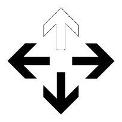 | 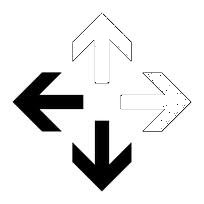 | ||
| 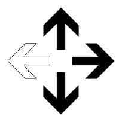 | 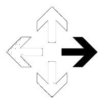 | 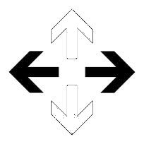 | 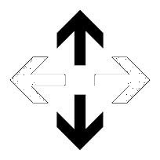 | 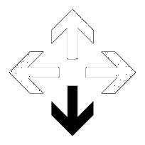 |
| 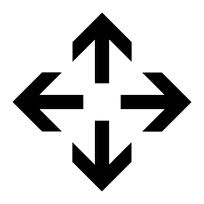 | ||||
| 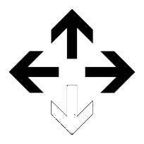 | 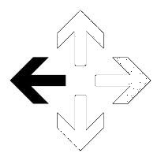 | 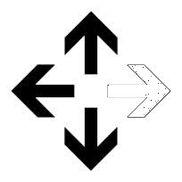 | ||
| 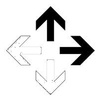 | 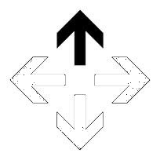 | 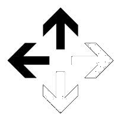 |
Dado que uma casa localizada na linha i e na coluna j pode ser identificada pelo par (i,j) e que a casa mais acima e mais à esquerda do tabuleiro é a casa (1,1), nós podemos traçar os seguintes caminhos mínimos para o Walk-Bot no tabuleiro ilustrado acima:
Tenha em mente que este foi apenas um exemplo. Podem existir tabuleiros em que há mais de um caminho que leve o Walk-Bot a atravessar o tabuleiro com vida. Além disso, você pode considerar que o Walk-Bot só consegue sair do tabuleiro pelas casas localizadas na coluna mais à direita. Em outras palavras, as casas localizadas na primeira linha (i.e. na linha mais acima) nunca terão uma instrução para o Walk-Bot ir para cima, as casas localizadas na última linha (i.e. na linha mais abaixo) nunca terão uma instrução para o Walk-Bot ir para baixo e, finalmente, as casas localizadas na primeira coluna (i.e. na coluna mais à esquerda) nunca terão uma instrução para o Walk-Bot ir para esquerda.
Você foi novamente um dos usuários selecionados para testar o jogo e dar um feedback para a LastLife. A fim de dar um bom feedback, você decidiu escrever um programa que, dado um tabuleiro, faz um relatório de quais são as casas iniciais que levam o Walk-Bot a atravessar o tabuleiro com vida. Com esse relatório, é possível classificar a dificuldade de cada tabuleiro.
| Casa | Binário | Decimal |
|---|---|---|
| 0000 | 0 | |
| 0001 | 1 | |
| 0010 | 2 | |
| 0011 | 3 |
| Casa | Binário | Decimal |
|---|---|---|
| 0100 | 4 | |
| 0101 | 5 | |
| 0110 | 6 | |
| 0111 | 7 |
| Casa | Binário | Decimal |
|---|---|---|
| 1000 | 8 | |
| 1001 | 9 | |
| 1010 | 10 | |
| 1011 | 11 |
| Casa | Binário | Decimal |
|---|---|---|
| 1100 | 12 | |
| 1101 | 13 | |
| 1110 | 14 | |
| 1111 | 15 |
| # | Entrada | Saída |
| 1 | 5 5 6 6 7 7 7 3 14 4 5 10 2 14 0 3 15 14 14 14 13 1 11 4 12 8 0 9 | Nao Sim Nao Nao Nao |
| 2 | 5 7 32 2 4 2 4 2 4 2 2 8 2 8 2 8 2 2 8 2 8 2 8 2 2 8 2 8 2 8 2 4 8 4 8 4 8 4 | Nao Nao Nao Sim Sim |
| 3 | 5 10 10 6 7 7 7 7 7 7 7 7 3 14 15 15 15 15 15 15 15 15 11 14 15 15 15 15 15 15 15 15 11 12 13 13 13 13 13 13 13 13 0 12 13 13 13 13 13 13 13 13 13 | Nao Nao Nao Nao Sim |
| 4 | 9 8 100 4 4 4 4 4 4 4 2 2 1 1 1 1 1 1 1 4 4 4 4 4 4 4 2 4 4 4 2 0 1 1 1 4 4 2 4 4 4 4 2 4 4 4 4 4 4 2 2 8 1 1 1 1 1 1 2 4 4 4 4 4 4 8 4 4 4 4 4 4 4 4 0 | Nao Nao Nao Sim Nao Nao Nao Nao Nao |
| 5 | 10 10 22 6 7 7 0 7 0 7 7 7 0 14 0 15 0 15 15 15 0 15 11 14 0 15 0 15 0 15 0 15 11 14 0 15 15 15 0 15 0 15 9 14 0 15 0 15 0 15 0 15 15 14 0 15 0 15 0 15 0 15 15 14 0 15 15 15 0 15 0 15 3 14 0 15 0 15 0 15 0 15 11 14 0 15 0 15 15 15 0 15 11 12 13 13 0 13 0 13 13 13 0 | Sim Sim Sim Nao Nao Nao Nao Sim Sim Sim |